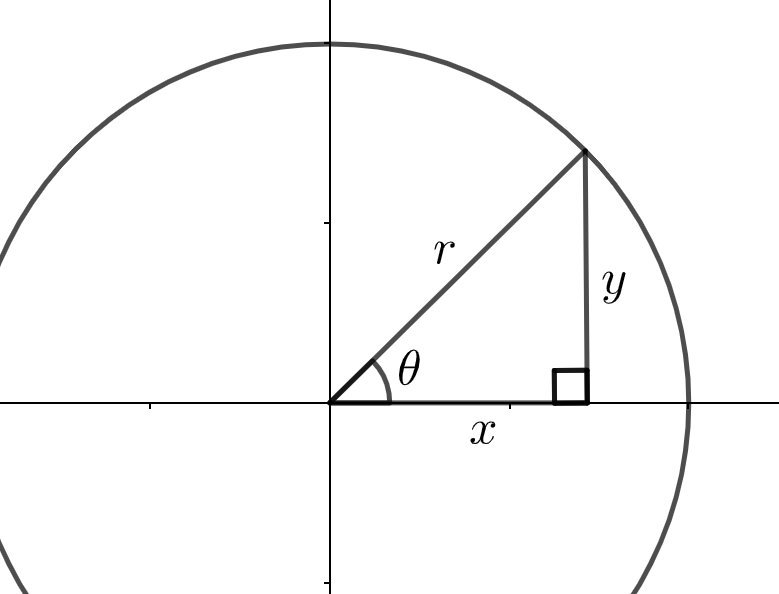
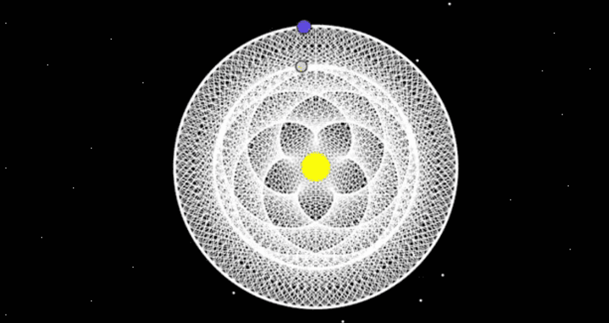

Convert \((-3,4)\) into polar coordinates.
Section 2.7 Polar Coordinates
The traveling fair is in town! You can see the rides at the fair grounds from the highway as you pass by (and smell the funnel cake). Our friend, Tom, finally worked up the courage to ask out Amy, and so a trip to the fair is their first date.
Their first ride is the bumper cars. Amy drives around the rectangular arena, but Tom’s cart is stuck in one of the corners. While he’s sitting there, he starts thinking about locations of other carts. The arena is rectangular and can be broken up into a grid of \(1\times 1\) ft\(^2\) sections, and each cart’s location is classified by an \((x,y)\) coordinate.
PICTURE
Coordinates like we see at the bumper cars are called rectangular coordinates (because they fit nicely in a rectangular grid). For example, the point \(P=\left(\frac{1}{\sqrt{2}},\frac{1}{\sqrt{2}}\right)\) is written to show that \(P\) is found in the plane by going \(1/\sqrt{2}\) in the \(x\)-direction and \(1/\sqrt{2}\) in the \(y\)-direction.
But are rectangular grids always the best way to think of things? Tom and Amy move on to the tilt-o-whirl, and even though we could label the coordinates of this round environment using a rectangular grid, there’s probably a more efficient way. What if instead of thinking in terms of rectangles, we thought of things in terms of circles? Rectangular coordinates are awkward for round and circular shapes, and so maybe there’s a better way. Meet polar coordinates.
Polar coordinates redefine point \((x,y)\) by \((r, \theta)\text{.}\) That is, we label our coordinates with a radius and an angle of rotation. We can get to the same point \(P=\left(\frac{1}{\sqrt{2}},\frac{1}{\sqrt{2}}\right)\) by going out a distance of \(1\) and rotating \(\pi/4\) \((45^{\circ})\) as pictured.
So the rectangular point \(\left(\frac{1}{\sqrt{2}},\frac{1}{\sqrt{2}}\right)\) can be written in polar coordinates as \(\left(1,\frac{\pi}{4} \right)\text{.}\)
Subsection 2.7.1 Converting Coordinates
How can we go from rectangle world to circle world? Obviously, with triangles.

Notice the values of \(x,y,\) and \(r\) form a right triangle, and so by Pythagorean theorem and a little trigonometry, \(x^2 + y^2 = r^2\) and \(\tan(\theta) = y/x\) (or maybe more usefully said: \(\theta = \tan^{-1}(y/x)\)).
Question 2.7.4.
Trigonometry can also help us go from polar to rectangular coordinates.
Question 2.7.5.
Using the same triangle as before, determine \(\cos(\theta) \) and \(\sin(\theta)\text{.}\)
Solution.
\begin{equation*}
\cos(\theta) = \dfrac{x}{r} \text{ and } \sin(\theta) = \dfrac{y}{r}.
\end{equation*}
There we have it! We use \(x = r\cos(\theta)\) and \(y = r\sin(\theta)\) to convert coordinates from polar to rectangular.
Question 2.7.6.
Conver polar coordinate \((9, \pi/6)\) into rectangular coordinates.
Subsection 2.7.2 Polar Functions
Ancient cultures spent a lot of time watching the sky. They built calendars, determined seasons, and even navigated across oceans with the help of positions of stars. Some cultures crafted stories around constellations while others saw their gods in the planets.
Tracking the position of planets and stars was crucial to society, but planets behaved erratically by sometimes travelling backwards! This motion is called retrograde motion, and it is an interesting phenomenon due to planets’ elliptical orbits. Retrograde motion led astologists to these amazing "dances of planets".

The vertical line test says amazing plots like these are not functions. What we really mean is that they are not functions with independent variable \(x\) and \(y\) as a function of \(x\text{,}\) \(y = f(x).\) However, in polar coordinates, plots like these would be right at home. We can treat \(r\) as a function of the independent variable \(\theta\text{.}\) So typically \(r = r(\theta)\) represents a polar function.
Subsection 2.7.3 Polar Coordinates in Desmos
We can easily view polar functions in Desmos by simply typing an equation \(r = r(\theta)\text{.}\) Let’s see what kind of functions we can create.
Activity 2.7.1. Polar Function Intro.
Try plotting \(r = \theta\text{.}\) You can type \(\theta\) by typing "theta".
The function \(r = \theta\) is known as the Archimedean spiral or the golden spiral and is related to Fibonacci sequence. As for Desmos, notice bounds of \(\theta\) are automatically added, and you can adjust that range as needed. Let’s try a few more polar plots.
Question 2.7.10.
Plot \(r = 2\cos(\theta)\text{.}\)
Question 2.7.12.
Plot \(r = \sin(2\theta)\text{.}\)
Activity 2.7.2.
Plot \(r = \sin(a\theta)\) and change the value of \(a\) with a slider.
Question 2.7.14.
Plot \(r = \sin^2(a\theta) + \cos^4(a\theta)\) and insert a slider \(a\) when prompted. (Hint: Desmos cannot recognize \(\cos^4(a\theta)\text{.}\) Try typing \((\cos(a\theta))^4\text{.}\))
Activity 2.7.3. Showing Off Polar Plots.
In a small group, make a Desmos plot of polar plot (or plots) to share with the class. The class will vote, and the winning group will be the "Polar Royals".